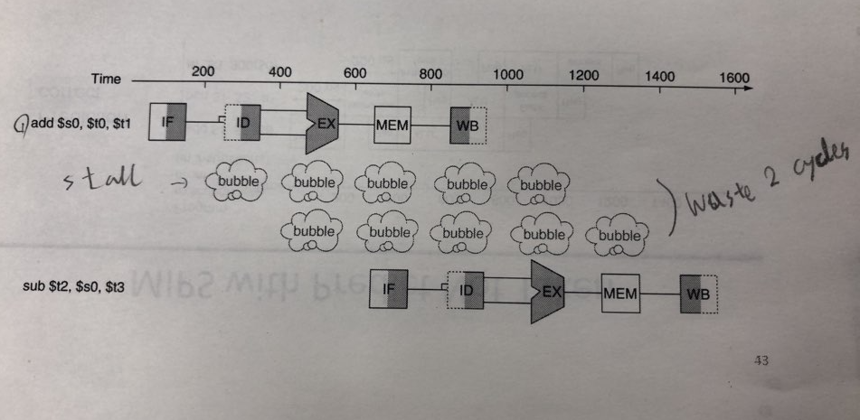
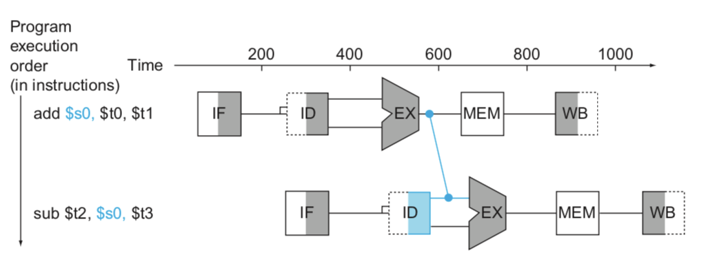
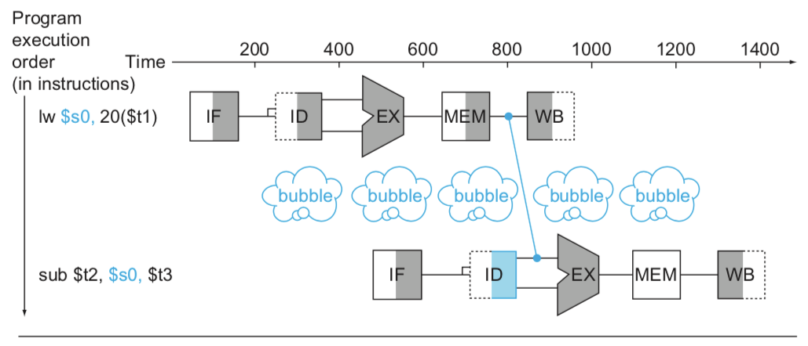
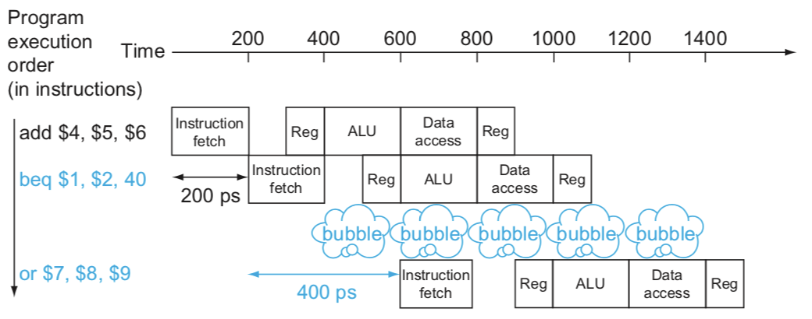

An Overview of Pipelining(2)
Hazards
Hazard란 다음 Instruction을 바로 다음 사이클에서 실행할 수 없도록 하는 상황을 뜻한다. Hazard를 해결하지 못하면 작업을 하지 않는 사이클이 발생해 Pipeline이 느리게 동작한다. Hazard의 종류를 살펴보자.
- Structure Hazard : 사용하려는 자원이 이용 중인 경우
- Data Hazard : 앞선 Instruction이 Read나 Write를 할 때까지 기다려야 하는 경우
- Control Hazard : 앞 Instruction에 의해 Control 동작이 결정되는 경우
Structure Hazard
여러 Instruction이 동시에 같은 리소스에 접근하는 경우이다. 메모리가 하나 뿐인 MIPS pipeline에서는, Load / Store가 메모리 데이터에 접근을 요청하면 Instruction Fetch 단계인 다른 Instruction은 Load / Store이 끝날 때까지 기다리고 있어야 한다. IF 단계인 Instruction은 한 사이클을 아무 작업도 하지 못하고 기다리는데, 이 때 Pipeline "Bubble"이 발생했다고 한다.
이러한 Structure Hazard를 해결하기 위해서는 Instruction 메모리와 Data 메모리를 분리해야 한다. 아니면 Instruction / Data 캐시를 분리해도 된다.
Data Hazard
이전 Instruction의 결과를 현재 Instruction에서 사용하려고 할 때, 이전 Instruction의 WB가 끝날 때까지 기다린 다음 현재 Instruction의 ID를 수행해야 한다. 이 경우를 Data Hazard라 한다. 아래와 같은 상황을 예시로 들어보자.
add $s0, $t0, $t1
sub $t2, $s0, $t3
여기를 보면 add의 Rd인 $s0가 sub의 Rs로 사용되었다. 우리가 아는 파이프라인에서는 아래와 같이 두 사이클을 쉬어야한다.

Forwarding(Bypassing)
Data Hazard를 피하기 위한 방법인 Forwarding은 이전 Instruction의 WB 단계까지 기다리지 않고 레지스터에 저장될 값을 현재 Instruction의 EX의 입력값으로 끌어올 수 있도록 한다.

이렇게 하면 낭비되는 사이클 없이 바로 Instruction을 이어서 실행할 수 있다.
Load-Use Data Hazard
이번에는 EX 단계에서 계산되는 것이 아닌 메모리에서 가져오는 데이터로 인해 발생하는 Data Hazard에 대해 살펴보자. 이번에는 예시코드가 아까와는 다르다.
lw $s0, 20($t1)
sub $t2, $s0, $t3
$s0에 들어갈 값은 EX에서 결정되던 이전 상황과는 달리 MEM에서 결정된다. Forwarding을 하더라도 lw의 MEM 단계 이후에 sub의 EX가 나와야 하기 때문에 아래 이미지와 같다.

여기서는 사이클 낭비를 완전히 없앨 수는 없고 1 사이클로 줄이는 데에서 그친다.
Code Scheduling to Avoid Stalls
Hazard가 발생하지 않도록 Instruction을 순서 재배치하라는 얘기이다. 자세한 설명은 일단 생략하겠다.
Control Hazard
파이프라이닝을 할 때, 이전 Instruction이 Branch(ex - beq)이면 ID 단계가 지난 후에야 다음에 실행할 Instruction을 알 수 있다. 그렇게 되면 아래 이미지*(강의 교재 figure 4.31)*처럼 한 사이클의 대기(Stall)가 발생한다.( beq 의 EX 단계까지 기다리지 않는 이유는 beq의 ALU 연산과 다음 Instruction의 IF 까지 한 사이클 내에 실행할 수 있어서라고 합니다. 이 내용에 대해서는 확신이 없기 때문에 정확한 이유를 알고 계신 분은 알려주시면 감사하겠습니다.)

이를 개선하는 방법으로 Branch Prediction이 있다.
Branch Prediction
더 많은 일을 수행하는 파이프라인에서는 브랜치 결과를 빨리 낼 수 없다. 그렇게 되면 지금처럼 한 사이클이 아니라 훨씬 더 많은 사이클 대기(Stall)가 발생한다. Stall을 조금이라도 줄이기 위해 브랜치의 결과를 예측하여 예측이 틀릴 때만 Stall이 발생하도록 하는 방식이 Branch Prediction이다.
Branch Prediction의 동작은 다음 사이클에서 예측되는 Instruction을 미리 Fetch한 다음, 만약 예측이 맞았으면 계속 수행하고 틀렸다면 Fetch된 것은 무효화하고 다른 주소에 대해 IF 단계부터 다시 수행한다. 그렇게 하면 예측이 맞았을 때의 사이클 낭비는 없게 된다.
More-Realistic Branch Prediction
Branch Prediction으로 예측이 맞았을 때의 Stall을 제거할 수 있다는 것을 알았으니, 이것을 더 효율적으로 만들기 위해서는 예측이 맞을 확률을 높일 필요가 있다. 어떻게 예측 확률을 높일 수 있을지 한 번 알아보자.
Static Branch Prediction
코드를 해석하여 문법의 특성에 맞게 예측한다. 그 예시로 반복문과 조건문(if)을 들 수 있다. 우선, 반복문은 반복이 수행되는 것이 더 확률이 높기 때문에 반복할 첫 Instruction의 주소로 예측한다. 다음으로 조건문에서의 branch는 조건이 맞았을 때를 예측하는 편이 더 확률이 높다고 보고 조건문의 첫 Instruction의 주소를 예측한다. 물론, 다른 이유로 다른 예측을 할 수도 있으므로 위 예시는 무조건적인 정답은 아니다.
Dynamic Branch Prediction
지금까지 브랜치가 동작한 기록을 바탕으로 앞으로 예상되는 값을 추정하는 방식이다. 하드웨어에서 기록을 측정한다.
Pipeline Summary
- 파이프라이닝은 Throughput을 향상시킴으로서 성능을 향상하는 방법이다.
- 여러 Instruction을 병렬적으로 실행함
- 각각의 Instruction은 같은 실행시간을 가짐
- Hazard에 영향을 받는다.
- Instruction Set 설계는 파이프라인 구현의 복잡도에 영향을 미친다.